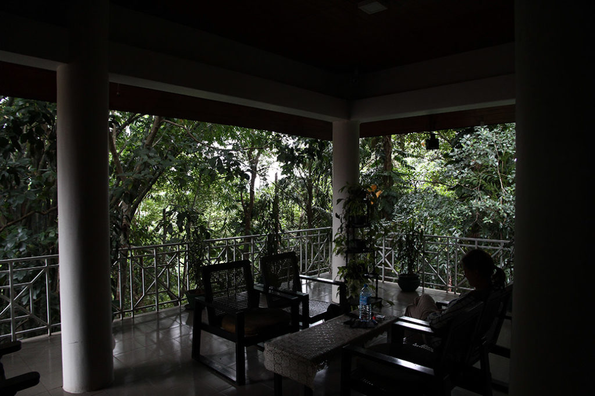

/ Kandy
Après un petit déjeuner nous prenons le tuktuk de la guesthouse pour la gare routière.
Bus jusqu’à Kandy.
Comme prévu nous revenons à la guesthouse réservée.

…les notes de cette fin de voyage se sont égarées, le récit s’arrête donc là. Nous rejoindrons l’aéroport de Colombo directement depuis Kandy après une journée passée en plus dans cette ville.